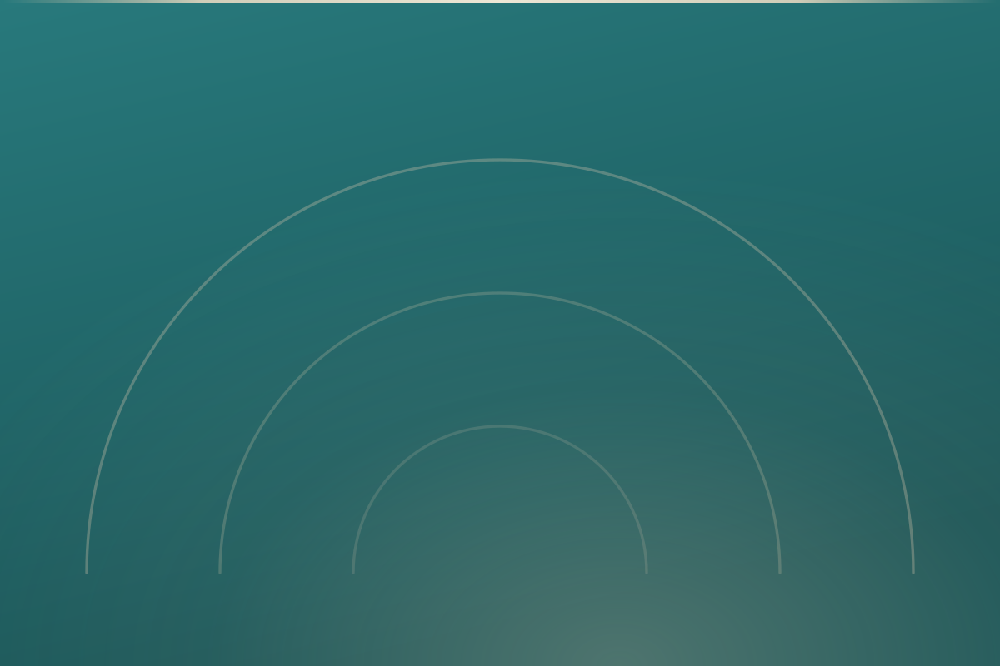
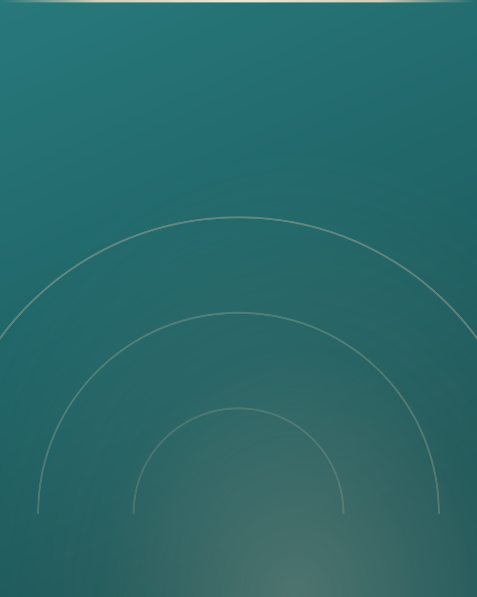
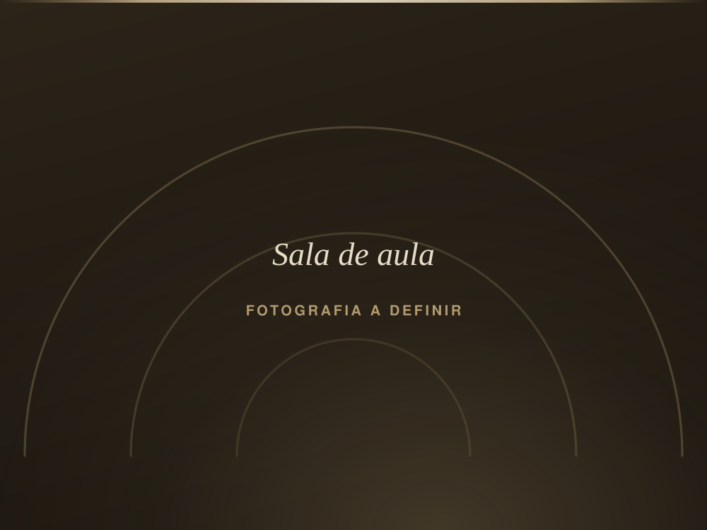
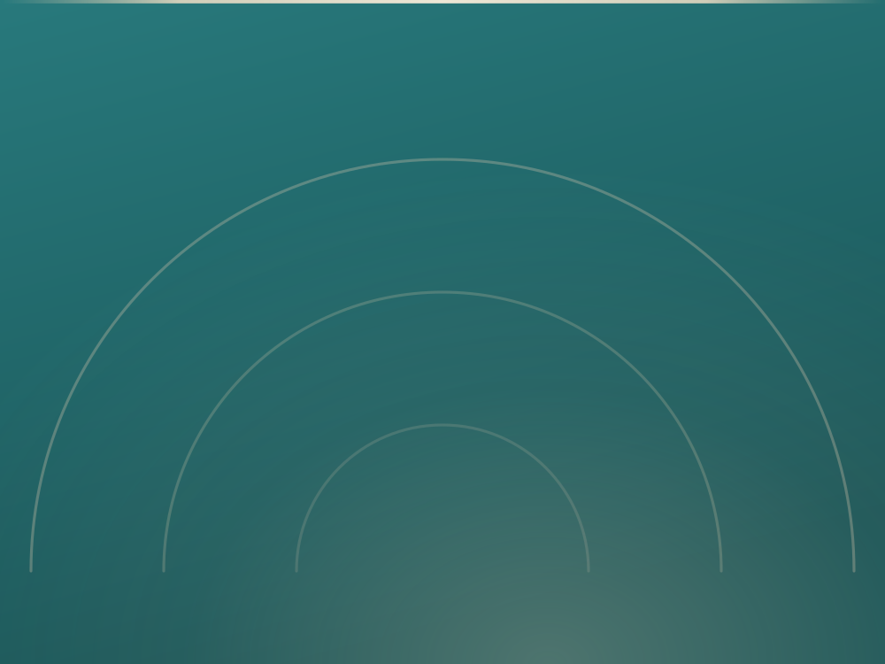
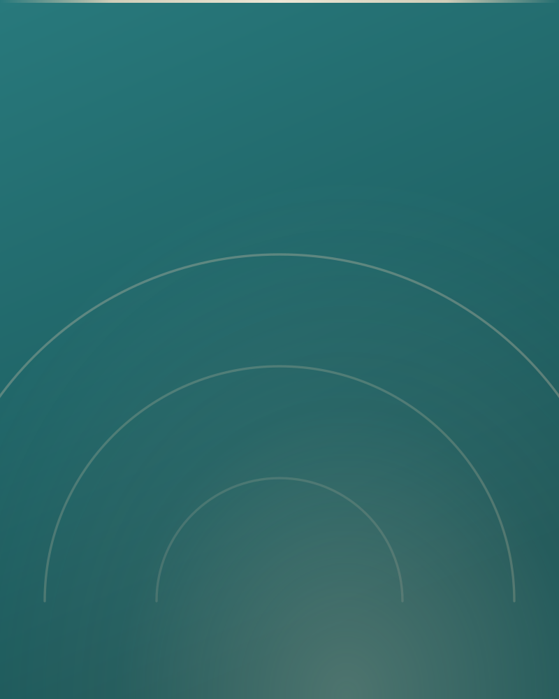

Pós-graduação
Harmonização Orofacial
O programa mais procurado do Instituto. Protocolos faciais com prática supervisionada desde os primeiros módulos.
Saiba mais
Últimas vagas abertas
Aprenda com professores reconhecidos, estrutura premium e ensino voltado para a prática clínica.
Champs Mall · Península · São Luís – MA
Seis decisões que o Instituto tomou antes de abrir a primeira turma.
Corpo docente formado por profissionais em atividade clínica, que ensinam o que praticam na semana seguinte.
Auditório, clínica, laboratório e salas projetadas para a demanda real de um curso de pós-graduação.
A prática clínica não é o complemento do curso: é a espinha dorsal dele, com acompanhamento próximo.
Certificado emitido na conclusão do programa. Fale com um consultor para os detalhes da titulação.
Turmas pequenas por escolha. Você termina o curso conhecendo cada colega e cada professor pelo nome.
Champs Mall, na Península, em São Luís. Formação deste nível sem precisar deixar o Maranhão.
Cada curso abre com o próprio corpo docente e a própria agenda de prática. O que não muda é o nível.
O programa mais procurado do Instituto. Protocolos faciais com prática supervisionada desde os primeiros módulos.
Saiba mais

Diagnóstico, planejamento e mecânica, com documentação ortodôntica trabalhada caso a caso.
Saiba mais

Da seleção de material à estratificação cerâmica, com bancada e laboratório à disposição.
Saiba mais

Cirurgia guiada, reabilitação e manejo de complicações, com prática desde o planejamento.
Saiba mais

Estratificação, cor e forma. O aperfeiçoamento para quem quer elevar o acabamento do dia a dia.
Saiba mais
Investimento, duração e datas de entrada são tratados diretamente com um consultor.
Ver todos os cursos
O Instituto Isabelle Arrivabene oferece pós-graduações e aperfeiçoamentos pensados para profissionais que buscam evolução real na odontologia, unindo excelência acadêmica, prática clínica e professores reconhecidos nacionalmente.
Localizado no Champs Mall, na Península, em São Luís, proporciona uma experiência de ensino moderna e exclusiva.
Auditório, clínica, salas, recepção e laboratório — todos no mesmo endereço, todos disponíveis à turma.




Fotografia a definir. Os cinco quadros acima são placeholders autorais, desenhados no mundo visual do projeto. Cada arquivo SVG traz, na própria descrição, o briefing do que a foto real deve mostrar. Remover este aviso ao subir o ensaio.
Profissionais em atividade clínica. Você aprende o protocolo com quem o executa toda semana.
Conteúdo de exemplo. Nomes, especialidades e biografias abaixo são exemplos de preenchimento em alta fidelidade — não são professores reais do Instituto. Substituir pelo corpo docente verdadeiro antes de publicar.

Especialista com atuação clínica em protocolos faciais. Coordena os módulos práticos do programa.

Atua em diagnóstico e planejamento ortodôntico, com ênfase em documentação e mecânica.

Cirurgia guiada e reabilitação. Conduz as sessões de planejamento caso a caso.

Trabalha cor, forma e estratificação, do laboratório à prova clínica.
O corpo docente completo, com currículo e cursos que cada um ministra, está na página de professores.
Ver todos os professoresConteúdo de exemplo
Os quatro depoimentos abaixo são textos de exemplo, escritos para dimensionar a seção. Substituir por depoimentos reais e autorizados antes de publicar.
“Entrei achando que ia rever teoria e saí com protocolo na mão. Na segunda-feira seguinte eu já estava aplicando no consultório.”
 Nome do alunoHarmonização Orofacial · exemplo
Nome do alunoHarmonização Orofacial · exemplo
“A turma pequena muda tudo. O professor conhece o seu caso, e a correção vem no detalhe que você não tinha visto.”
 Nome do alunoOrtodontia · exemplo
Nome do alunoOrtodontia · exemplo
“Não precisei me mudar para São Paulo para estudar com gente desse nível. Para quem tem consultório aberto, isso é decisivo.”
 Nome do alunoImplantodontia · exemplo
Nome do alunoImplantodontia · exemplo
“O laboratório aberto foi o que fez diferença. Repetir a estratificação até acertar a cor é uma coisa que curso teórico não entrega.”
 Nome do alunoPrótese Dentária · exemplo
Nome do alunoPrótese Dentária · exemplo
1 / 4
Quatro estações. Você sabe em qual está e o que falta para a seguinte.
Compare os programas e fale com um consultor sobre qual entrada se encaixa no seu momento clínico.
Preencha a ficha com seus dados profissionais. A inscrição reserva sua análise, não a vaga.
Diploma, registro no conselho e documento de identidade. A conferência é feita antes de qualquer cobrança.
Com a documentação aprovada, a vaga passa a ser sua e você recebe o calendário da turma.
As vagas de Harmonização Orofacial estão na etapa final de preenchimento. Turmas com últimas vagas encerram a análise por ordem de documentação aprovada.
As turmas são pequenas por escolha. Fale com um consultor e descubra se o seu perfil se encaixa na próxima entrada.